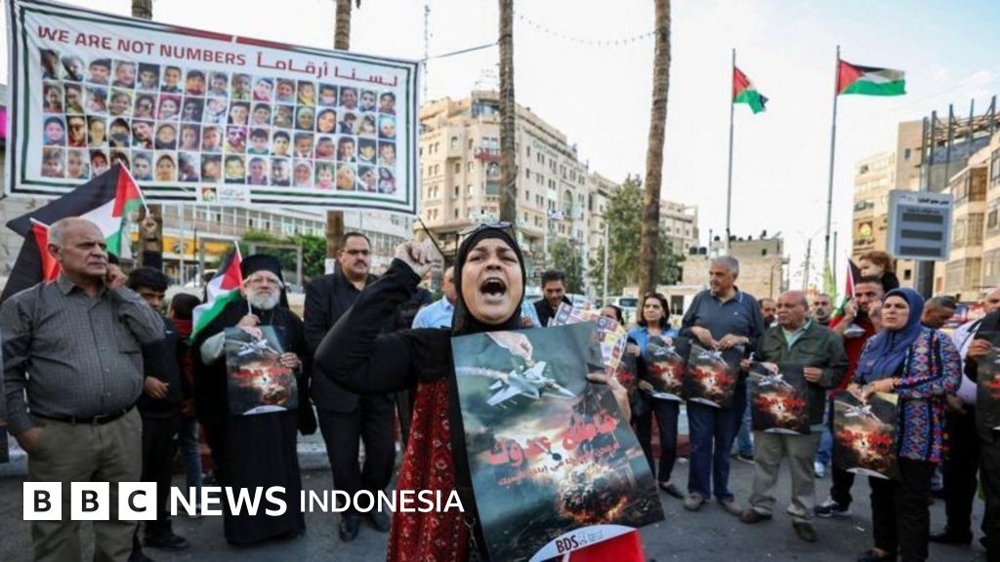
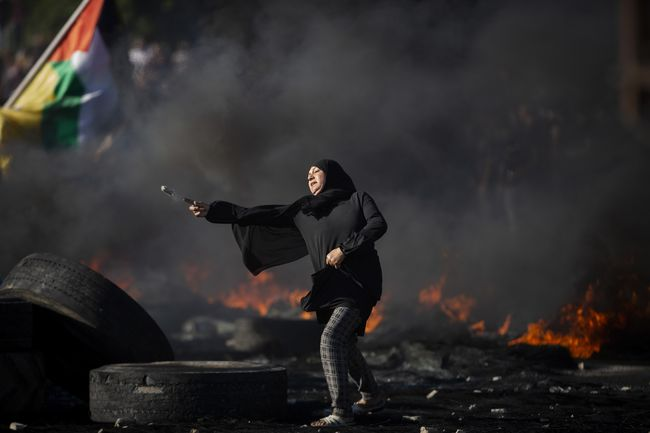

Israel Kembali Lancarkan Serangan Drone ke Gaza, Ada
Korban Tewas
Israel kembali melancarkan serangan drone ke wilayah Gaza yang
mengakibatkan jatuhnya korban jiwa dan menambah panjang daftar warga
sipil yang terdampak konflik. Serangan tersebut dilaporkan menyasar
beberapa lokasi yang diduga menjadi target militer, namun ledakan juga
terjadi di area permukiman sehingga menimbulkan korban tewas dan
luka-luka. Tim medis serta relawan segera melakukan evakuasi terhadap
para korban di tengah keterbatasan fasilitas kesehatan yang masih
mengalami tekanan akibat konflik berkepanjangan. 

Peristiwa ini kembali memicu kekhawatiran masyarakat internasional mengenai meningkatnya eskalasi kekerasan dan dampaknya terhadap kondisi kemanusiaan di Gaza. Berbagai organisasi kemanusiaan menyerukan perlindungan bagi warga sipil serta akses bantuan yang aman untuk memenuhi kebutuhan dasar masyarakat terdampak. Situasi di lapangan dilaporkan masih sangat tegang, sementara warga terus menghadapi ancaman serangan lanjutan. Sejumlah pihak internasional kembali mendesak semua pihak untuk menahan diri, mengurangi eskalasi konflik, dan mengutamakan upaya diplomasi demi terciptanya perdamaian yang berkelanjutan di kawasan tersebut. Baca Selengkapnya